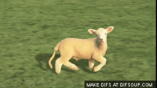

The Vegetable Lamb of Tartary
Death

So once the lamb grows to a certain size, it kinda just peaks and runs out of grass to eat.
So the lamb is kinda tied to the stalk, which means it can't really do anything if its not connected to the stalk.
Once it runs out of grass to eat it just kinda dies, and rots, and thats basicaly it.